|
|
Geburtstagskinder
 |
 |
 |
 |
 |
| Anfang |
vorheriges |
Index |
nächstes |
Ende |
In der dritten
Juniwoche gab es gleich zwei Geburtstage zu feiern: Erst der von
Charlotte am 13.06. und dann drei Tage später der von Saskia.
|
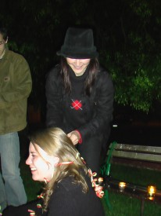
Wir feierten auf der Wiese
vor der Résidance du Charmois in den Geburtstag von Charlotte
rein. Dazu gab es nette
Luftschlangen und natürlich auch viele Geschenke, wie zum Beispiel
eine
tolle Bierflasche mit einem Kuhfellmuster, deren Inhalt in der Region
von
Lothringen gebraut wird. Außerdem einen Gutschein für einen
Gutschein, die Kreativität der Gäste war grenzenlos, was aber
die Freude des Geburtstagskindes nicht beeinflusste! =)
|
|
| 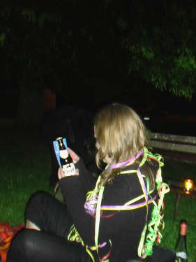 |
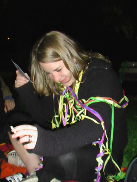 |
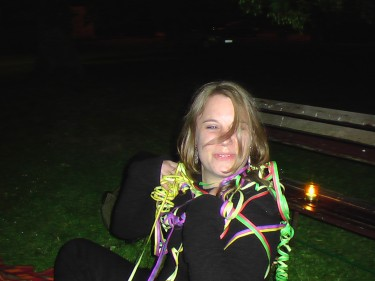 |
Am 16.06. ging es weiter:
|
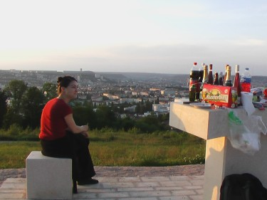 |
Dieses Mal
wurde der zweite Erholungspark der Vandoeuvre-Laufstrecke zum Ort des
gemütlichen Beisammenseins ausgewählt,...
|
... von dessen
Aussichtsplattform man eine wundervolle Sicht über Nancy hat.
|
| 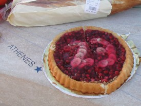 |
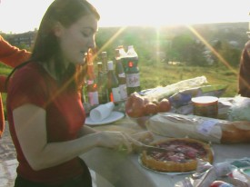 |
| Natürlich
durfte auch ein Geburtstagskuchen bestehend aus selbst gepflückten
Walderdbeeren, daran heftenden Fuchsbandwurmeiern und
Bananenstücken nicht fehlen. |
Das
Geburtstagskind höchstpersönlich durfte die Obsttorte
anschneiden. Na ja zum zweiten Mal, denn zuvor musste sie bereits ein
Mal halbiert werden, damit sie in den Kühlschrank passte. |
|
Zahlreiche
Nationen ließen sich diese Feierlichkeit nicht entgehen und
entsandten Vertreter, wie zum Beispiel Spanien mit Roberto (im linken
und rechten Bild zu sehen) und auch Deutschland mit Christian (nur
links zu sehen), der sich für die Bilanzierung der alkoholischen
Getränke zur Verfügung stellte. =) |
|
| 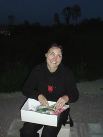 |
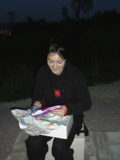 |
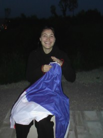 |
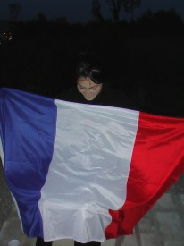 |
| Dann kam das große Auspacken der
Geschenke... |
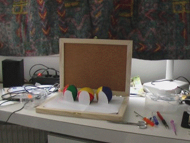
|
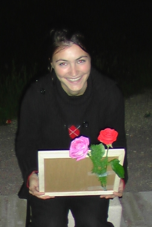 |
|
| Neun Monate
Motivsuche, viele Tage Kreativitätsfusion und stundenlange
Bastelarbeit waren ihre Mühe wert,... |
... wenn man
dieses Lächeln als Dank erhält. |
Die Stadt
verabschiedete sich dann mit einem Hauch eines Lichtermeeres. |
|
|
|
|
|
| Anfang |
vorheriges |
Index |
nächstes |
Ende |
|
|